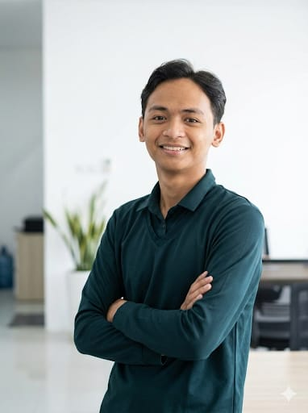

I transform complex datasets into actionable business insights. Eager to uncover hidden risks and drive operational excellence through data-driven decisions.
Download CV
My foundational experience in safety management and operations has deeply ingrained in me the value of using data to uncover hidden risks and drive operational excellence.
A recent graduate of the RevoU Full Stack Data Analytics program, I connect disparate datasets using Python, SQL, Tableau, and Power BI into impactful dashboards and strategic narratives that guide stakeholders.
Read MoreInterested in collaborating or have questions about my data projects? Feel free to reach out via email or connect with me on LinkedIn.